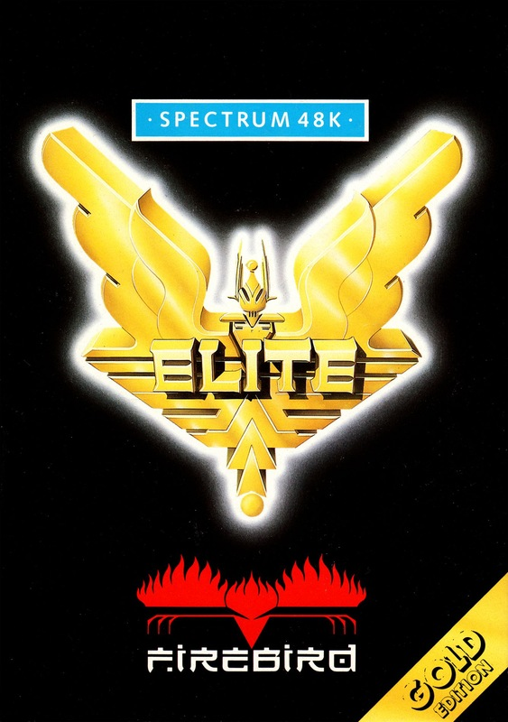
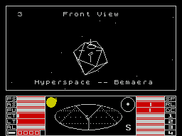

Elite


{kind=link}

| Publisher: | Firebird |
| Price: | £14.95 |
| Year: | 1985 |
| Source: | CRASH, Issue 22 |

Starting life on the BBC, Elite was converted for the Commodore and, has just appeared for the Spectrum, a mere three months late. It will go down in history as the first major piece of software to be supplied with the Lenslock protection device — a cunning way of preventing piracy by supplying a plastic decoding lens which is used to discover the encrypted access code for the game. In essence, after loading you need to look through the lens onto the screen in order to see the code letters which must be input before the program will RUN. The cassette is also accompanied by a slim novella which sets the scene.
Converted by Torus, creators of Gyron, Spectrum Elite follows a very similar format to its other incarnations. With stars in your eyes and a Cobra Mk III in your charge, you’ve set yourself the task of becoming Elite, a combateer of the highest ranking. To become Elite you’ll have to rise through several distinct stages starting with the almost derogatory rating of ‘Harmless’. The more ships you kill, the higher your rating will rise, though mindless violence is not the only aspect to the game.

To become an efficient killer you must have a well equipped ship, replete with weapons of destruction. When you start, the ship you’re given is a pretty poor machine, not really up to the rigours of deep space combat, so the best thing to do is to buy extra equipment from the space stations you’ll find in orbit around every planet. Most of the military hardware doesn’t come cheap and seeing as how you only start with one hundred credits you will need to make some money. This is where the mindwork comes into play. You will have to trade.
Every planet in the eight galaxies has a tech rating and some information detailing the world’s economy. Using a trader’s cunning, you can buy goods at one planet and take them to another and sell them for a profit. To be sure of making a profit it is wise to sell goods naturally rare on the planet you’re trading with. For example a tech level 12, highly industrialised planet will probably have to import food, making the market price quite high. If you buy food from a low tech agricultural planet you can ferry it to the more advanced planet for a good profit margin.
Information about each planet’s political state is available, which will range from corporate state to anarchy. It is not wise to travel to an anarchic system with little in the way of weaponry as the place will be crawling with pirates. And pirates are doubly aware of you if you’re carrying any cargo.
Different cultures aren’t too friendly with each — you can’t land on planets. This makes trade awkward, so it’s effected through a system of space stations. Each trading planet is orbited by a Coriolis space station which you need to dock with — a time consuming and awkward task. Once docked, you can refuel your ship and barter your wares inside the hanger. If you get rich, it’s possible to buy a docking computer to make life easier.
Fuel is only expended when you use hyperwarp for interstellar travel. Pottering around in planetary space burns no fuel and trips can be costed in fuel terms on the short range chart. If you’ve bought some fuel scoops you can pick up free fuel by flying close and raking energy from a star’s corona — sun skimming.
Bounty hunting is lucrative and simple: jump into an anarchic system and blast away at everything. A kill point is awarded for each ship destroyed and your credit status grows with the bounty. It is, however, best to go in heavily armed, and with a fair amount of battle experience. Other loot gathering activities include asteroid mining, slave trading and drug running — but the last two are illegal and harm your legal status.
You see the action from the cockpit, viewing a 3D representation of space. Three other views are available through left, right and rear windows. The display is mainly monochrome; vector graphics represent ships and objects. Colour appears occasionally, in explosions.
To keep track of ships and asteroids not in your immediate vicinity, there’s an oval short range chart. Other ships, attacking and friendly, are represented as a bar with a small hook at the end showing the height above or below your ship and distance from it.
A wealth of informative documentation comes with the cassette. A book commissioned from SF writer Robert Holdstock gives an interesting story plus a multitude of veiled hints for survival in a rough galaxy. The Space Traders’ Flight Training Manual is also included, an essential guide to survival giving hints on docking, trade and combat. You also receive a pretty wallchart to hang in your cabin!
If you are doing well it’s possible to save out your progress to tape. This will record all your status attributes including score and credits.
CRITICISM
‘Elite is one of the most imaginative games ever to be designed to run on a home computer and Spectrum owners should be pretty chuffed that they’ve got a superb version. When a ship’s destroyed, the explosion looks like an expanding ball of gas and vaporised metal. It’s highly effective. There are slightly fewer ships than on previous versions but the graphics move quite fast considering their complexity — they’re flicker free, too! All in all an excellent version of an excellent game.’
‘With the Spectrum Elite, Firebird have improved on a tried and tested formula. It must have been quite a risk to take, adapting a cult game from the BBC and putting it on the Spectrum, but the risk has paid off handsomely. The graphics are excellent of a reasonable speed (not as fast as Starion), and, unlike previous versions of Elite, they are not flickery. So much for Elite the Spectrum version, what about Elite the game? It can be slow to get into, because at the outset you must trade to get on, but once you have achieved a level of skill that allows you better equipment for your ship, the game really hits deep space in a mean, mean way. This is a perfect blend of trading, shoot em up and strategy and if you’re not very careful you can find yourself getting badly hooked, spending hours trying to get just that little bit further. Here the SAVE game facility is a great help, and means that Elite is not so much a game — more a way of life. That may sound corny, but for once it really is true! No self-respecting Spectrum owner should be without it because it’s worth every penny of the £15 price tag.’
‘Well here it is at last, the Spectrum version of Elite, and yes it has been worth the wait. The graphics are very good, only slowing down a little, if at all, when the screen gets chock a block. The launch/hyperspace sequence is very neat, nearly as good as Dark Star. The screen layout is well-balanced with just the right amount of colour and dots. The addictive nature of the game is increased with 5 missions compared to the meagre 2 of the C64 and BBC versions. My only gripe is that you have to use some stupid lenslock thing to play the game — you could spend hours trying to suss out the thing. You can compare your version of Elite [with the] versions for other machines and smile with pride at what Firebird have produced.’
COMMENTS
| Control keys: | Front View/Launch (1); Back View/Buy (2); Left View/Sell (3); Right View/Equip (4); Escape Pod (Q); Energy Bomb (W); ECM (E); Find Planet (R); Fire Missile (F); Target (T); Unarm (U); Galactic Chart (I); Local Chart (O); Data on System (P); Fire Laser (A); Dive/Cursor Up (S); Climb/Cursor Down (X); Anti-clockwise Roll/Cursor Left (N); Clockwise Roll/Cursor Right (M); Distance (D); Hyperspace/Intergalactic Jump (H); Torus Jump Drive (J); Prices (K); Status (L); Inventory (ENTER); Freeze (SHIFT); Docking Computer (C); Home Cursor (B); Save/Decelerate (SYMBOL SHIFT); Continue/Accelerate (BREAK) Keyboard overlay provided |
| Joystick: | Compatible with all |
| Keyboard play: | Complicated! |
| Use of colour: | Sparse but highly effective |
| Graphics: | Excellent, but occasionally produces odd effects |
| Sound: | Nice tune when loaded, plus some spot effects |
| Skill levels: | One |
| Screens: | Not applicable |
| General rating: | A first class, absorbing, game |
| Graphics: | 93% |
| Playability: | 91% |
| Getting started: | 92% |
| Addictive qualities: | 94% |
| Value for money: | 81% |
| Overall: | 92% |